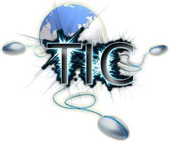
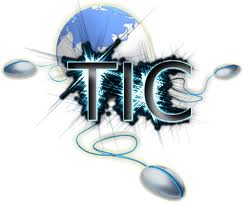

El soporte que hoy en dia brindan las TICs a la educacion es importante ya que apoyan el proceso educativo de los estudiante permitiendoles contar con herramientas importantes y de gran ayuda para su procerso formativo. Existen diversas formas de definir qué se entiende por Tecnologías de la Información y la Comunicación (TIC). Es así que las tecnologías de la información y la comunicación se pueden definir como: "… el conjunto de procesos y productos derivados de las nuevas herramientas (hardware y software), soportes de la información y canales de comunicación relacionados con el almacenamiento, procesamiento y transmisión digitalizados de la información..." .
La técnica es un conjunto de saberes prácticos o procedimintos para obtener el resultado deseado. Una técnica puede ser aplicada en cualquier ámbito humano: ciencias, arte, educación etc. Aunque no es privativa del hombre, sus técnicas suelen ser más complejas que la de los animales, que sólo responden a su necesidad de supervivencia. En los humanos la técnica muchas veces no es consciente o reflexiva, incluso parecería que muchas técnicas son espontáneas e incluso innatas. La ténica requiere de destreza manual y/o intelectual, generalmente con el uso de herramientas. Las técnicas suelen transmiten de persona a persona, y cada persona las adapta a sus gustos o necesidades y puede mejorarlas. La técnica surgió de la necesidad humana de modificar su medio. Nace en la imaginación y luego se lleva a la concreción, siempre de forma empírica. En cambio la tecnología surge de forma científica, reflexiva y con ayuda de la técnica (desde el punto de vista histórico). Otra definición de técnica: "Supone el razonamiento inductivo y analógico de que en situaciones similares una misma conducta o procedimiento produce el mismo efecto, cuando éste es satisfactorio. Es por tanto el ordenamiento de la conducta o determinadas formas de actuar y usar herramientas como medio para alcanzar un fin determinado." Características de la técnica * Nace en la imaginación y luego se pone en práctica, muchas veces nace de la prueba y el error. * Se suele transmitir entre personas y se mejora con el tiempo y la práctica. * Cada persona le imprime su sello personal. * No es exclusiva de los humanos, aunque sus técnicas son más complejas.
El cambio de función en la institución educativa propiciado por las potencialidades de las TIC ofrece implicaciones sociológicas, metodológicas, etc. Pero sobre todo, lleva consigo cambios en los profesionales de la enseñanza y entre éstos, el cambio del rol del profesor es uno de los más importantes. Al igual que el alumno, que ya está en el futuro de que estamos discutiendo, con referentes de la sociedad de la información, de la era digital, el rol del docente también cambia en un ambiente rico en TIC.
 
